Возможно, не была нажата галочка во время установки, удалите гит баш и установите заново, не забудьте проверить отмечена ли эта галочка
Надпись "remote Permission to 'URL....'" dined to "userName" говорит о том, что запрашиваемый доступ к адресу "адрес" запрещён
fatal: unable to acess "URL...": The request URL returned error: 403 говорит о том, что запрос на получение доступа к данному адресу был возвращён от сервера с ошибкой 403. Данный статус обозначает "Запрещено, не уполномочен".
Возможные причины возникновения ошибки:
Порядок действия для решения:
Проверяем, что у нас есть ключ, который используется eval "$(ssh-agent -s)"
В консоли должна высветиться такая запись если он есть Agent pid 188 , число у вас будет своё
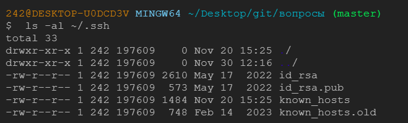Также нам нужно проверить, что у нас есть ключи
ls -al ~/.ssh
В другом случае, нам надо заново проделать весь порядок работ по созданию и настройке SSH ключей из домашней работы( Старт 1.9 )
Также стоит убедиться в правильности создания URL для удаленного репозитория
git remote -v
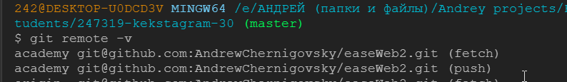git remote show name(academy or another)
при необходимости обновить адрес для удаленного репозитория
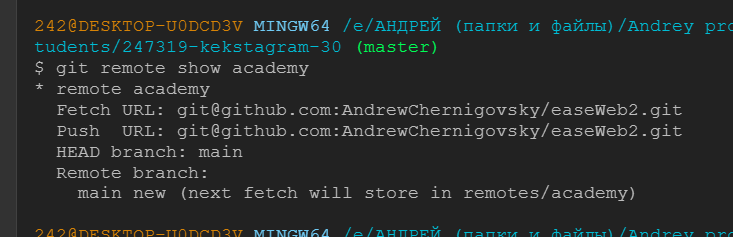git remote set-url name(academy or another) new-url
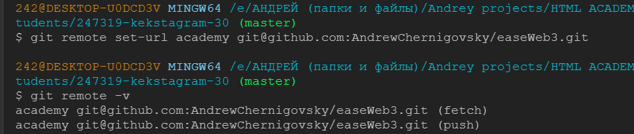Проверяем нашу учетную запись git config --list
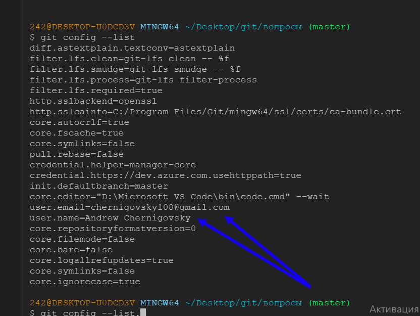В консоли должны высветиться данные, в том числе и почта, имя пользователя
Если этих данных нет или они не совпадают с теми от которых происходит запрос на сервер, то имя и почту нужно задать заново.
git config user.name "new name"
git config credential.username "new name"
Если это не помогло решить проблему, то ее нужно подробно описать на дискорд сервере и попросить помощи.
Сначала мы видим 2 коммита, затем закрытый Пулл Реквест, затем удаление ветки, её восстановление и снова открытый Пулл Реквест, а далее автоматический мерж кексобота ветки с мастером
Порядок работ должен быть следующим:
Мне написали, что не работает ссылка, не посмотреть страницу в опубликованном виде
Такого рода скриншот мне мало чем может помочь, присылайте более подробно свою проблему, а то приходится гадать во многих случаях
Порядок работ должен быть следующим:
Первый конфликт возникает из-за того что мы не обновили свой форк относительно основного мастер-репозитория.
Были внесены изменения в один и тот же файл как в основном репозитории так и в его форке.
Мастер-репозиторий был обновлен, а мы форк не обновили и сделали индексирование файла, коммит и его отправку.
Создали Пулл Реквест, который Гит не может автоматически смержить, так как один и тот же файл носит разные изменения.
Чтобы решить данный конфликт нам надо сделать следующее:
Отредактировать файл так чтобы он не конфликтовал и нажать в правом углу кнопку "Mark as resoleved" Отметить как разрешенный
В данном случае, можно просто оставить оба изменения из разных файлов и объединить их в один
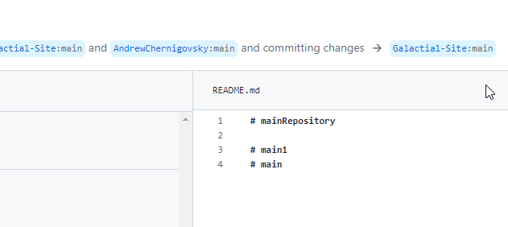После этого нажать на зеленую кнопку Commit merge закоммитить слияние
Далее он спросит нас создать новую ветку или слить с главной, а после даст возможность слить пулл-реквест как это происходило ранее
Теперь мы видим наши изменения в нашем удаленном мастер-репозитории
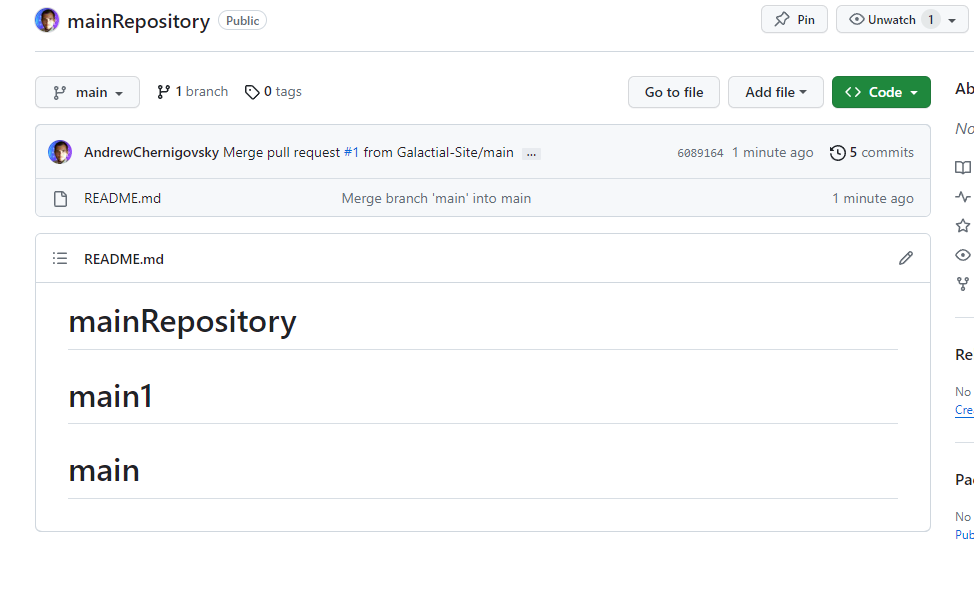Поcле того как мы разрешили конфликт на удаленном репозитории и форке, нам нужно обновить свой локальный репозиторий, но мы забыли про это и уже внесли измненения, у нас конфликт версий
HEAD ( Current Change ) Главная ( текущие изменения ) Это то что у нас находится на данный момент, те изменения, которые мы внесли без синхронизации с удаленным репозиторием
хеш-тег (Incoming Change) Номер коммита ( входящие изменения ) Это то что находится на удаленном репозитории
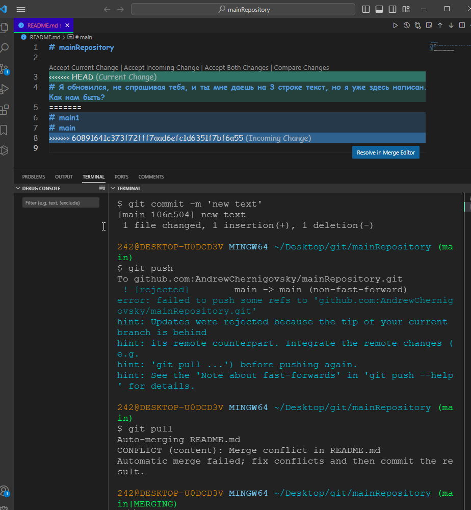нажмём кнопку "Resolve in Merge Editor"
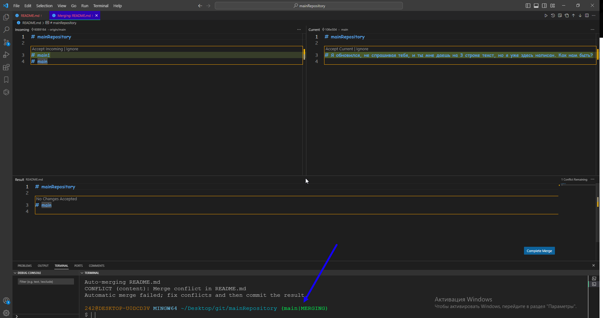Во-первых увидим название ветки в которой мы находимся "main | MERGING"
Во вторых 3 окна (верхнее левое - оригинал удаленного репозитория, верхнее правое - то что мы изменили у себя и пытаемся запушить, нижнее окно это конечный вариант того файла, который будет применен для всех) и кнопку Complete Merge (завершить слияние)
Также есть кнопки у конфликтующих данных "Accept Incoming | Ignore" "Accept Current | Ignore"
Они предлагают нам принять изменения по отдельности если мы нажмем только на одну версию файла, проигнорировать и дать гиту самому решать, либо принять оба изменения и сгруппировать их.
В данном случае, я сгруппировал их нажав в обоих файлах "Accept"
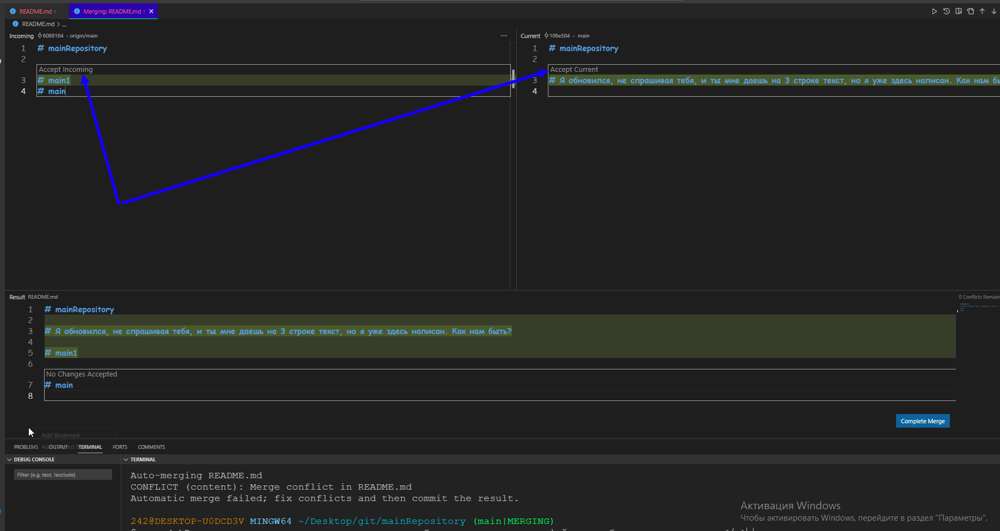После того как я нажал на кнопку Complete Merge, vs code мне подсветил кнопку коммитов, я нажал на нее и нажал кнопку sync, чтобы синхронизировать репозитории
Далее я просто перешел из ветки main | MERGING в ветку main
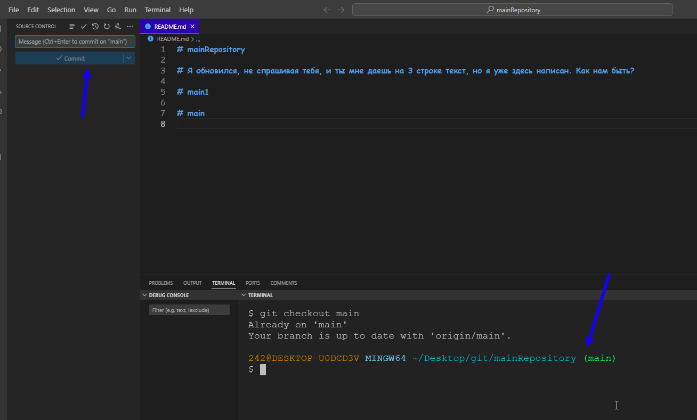Репозиторий также обновился согласно нашим измненения, при этом сохранил и те данные, которые нам также нужны
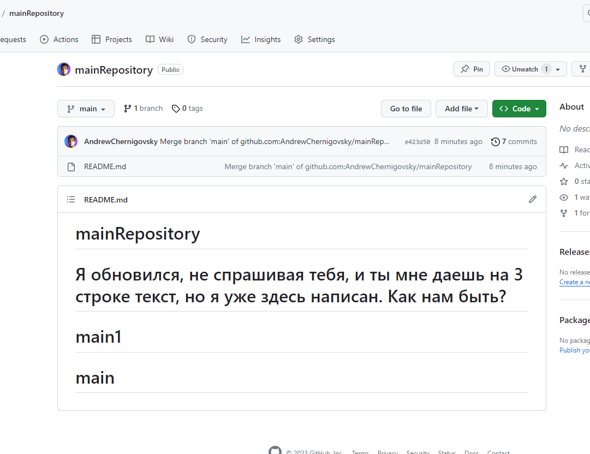Вариантов конфликтов может быть разное количество, и зачастую это нужно сидеть и разбираться с файлами, которые несут в себе разные изменения от разных людей. Поэтому лучше не редактировать совместно один и тот же файл. А также следить за актуальной версией своего проекта
Git Bash и командная строка (cmd.exe) отличаются по нескольким параметрам: